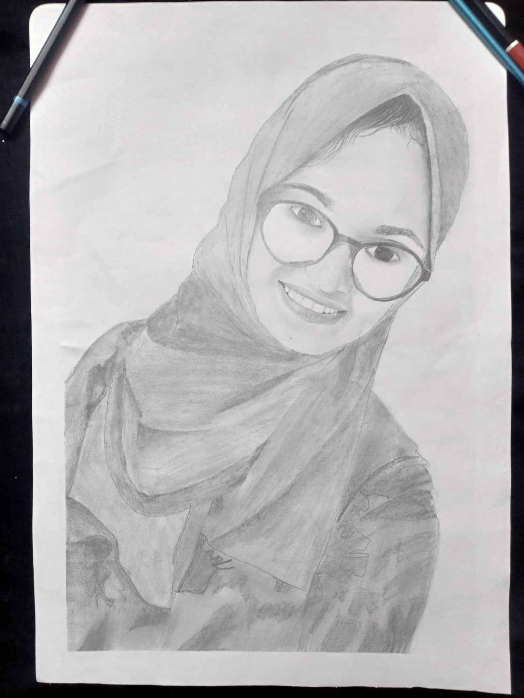

First thank you for everything.
আস্তে আস্তে মন দিয়ে পড়ো নিচের লিখাটি
কেমন আছ ফারিহা? আশা করি সম্পূর্ণ লিখাটি পড়বে। আমাকে তো তুমি চিনো। একটা গাধা,আন স্মার্ট ছেলে যে তোমার জন্য পাগল । তোমার সাথে প্রায় ২.৫ বছর কাটিয়েছি। একসাথে গান শিখেছি, একসাথে সময় কাটিয়েছি। কতই না স্মৃতি আছে আমাদের ? মনে আছে তোমাকে একবার আমি রুমে লক করে দিয়েছিলাম? ওয়াজিহা না থাকলে তোমাকে কিছুক্ষন লক করে রাখতে পারতাম। আসলে কি দিন ছিল। একজন আরেকজনকে কত কিল ঘুশি দিয়েছিলাম। তোমার সাথে কাটানো প্রতিটি মুহূর্ত যেন এক একটি রূপকথার গল্পের ন্যায়। আমার মনে হয় ইশ আবার যদি ফিরে যেতে পারতাম তোমার সাথে সেই কাটানো মুহূর্ত গুলোতে। যদি ডোরেমন এসে আমাকে নিয়ে যেত। আমি মিস করি আমাদের ঘন্টার পর ঘন্টা কথা বলার সময়টাকে । মনে আছে একবার গানের রিহার্সেলের দিন আমারা একটা রুমে বসে কথা বলছিলাম।কেউ ছিলোনা রুমে। আমাদের আশে পাশের কোনো খোঁজ খবর ছিলো না, আমরা আমাদের জগত নিয়ে ডুবে ছিলাম।পরে জানতে পারলাম ওইদিন স্যার আর রিহার্সেল করায়নি। তোমার মনে আছে তোমাকে আমি একটা নাম দিয়েছিলাম? হ্যাঁ গ্ল্যাডিয়ার্স। পরদিন যখন তুমি এই নামটা একটা কলমের ভিতরে কাগজে মুড়িয়ে আমাকে দেখিয়েছিলো তখন আমি কি পরিমান খুশি হয়েছিলাম তার কল্পনার অতীত। তোমার চেহেরা অনেক মায়াবী লাগে। পৃথিবীর সব মায়া যেন আল্লাহ তোমার চেহারা দিয়েছে। সামনে পেলে তোমার দিকে আমি একপলকে তাকিয়ে থাকতে পারব। কিন্তু কেন জানি মেকআপ দিলে আমার ভালো লাগে না। আমি তোমার প্রাকৃতিক মায়াবী চেহারাকে পছন্দ করি। তুমি মেকআপ দিলে আমি তুলে ফেলার জন্য জোর করতাম। তুমি হয়ত বিরক্ত ফিল করতে। আমি যখন কোনো অনুষ্ঠানে যেতাম তখন তোমার আশায় বসে থাকতাম। কখন তুমি আসবে, কখন তোমার সাথে কথা হবে। আমি সবসময় আবিদের উপর জেলাস ফিল করতাম। আবিদ সবসময় তোমার সাথে থাকার সুযোগ পায় যেহেতু সে তোমার ভাই। সে তোমার সাথে দিনের বেশিরভাগ সময় থাকতে পারে আর আমি তোমার সাথে সপ্তাহে ৪ ঘন্টা সময় কাটাতে পারি । তোমাকে আমি ক্লাস ৬ থেকে পছন্দ করতে শুরু করি। তখন হয়তো জানতাম না এই অনুভূতিটা কি। তোমার সাথে সময় কাটাতে এতো কেন ভালো লাগত। তোমার সাথে দেখা করার জন্য স্ট্রাগল এর শেষ ছিলো না। আমি প্রচন্ড জেদী,আমি আমার স্বপ্ন পূরনের জন্য সব কিছু করতে রাজি। তুমি আমার জন্য একটি স্বপ্নের মতো যা পাওয়ার জন্য আমি যুদ্ধ করছি।১৪ এপ্রিল ২০১৯ এ তোমাকে প্রপোজ করেছিলাম। আমার এখনো প্রতিটি মুহূর্ত মনে আছে। এটি আমার জন্য অনেক স্পেশাল একটা মুহূর্ত । কিন্তু তোমার থেকে তখন উত্তরটা জানা হয়নি। এরপর বন্ধ হয়ে যায় আমাদের যোগাযোগের মাধ্যম। আস্তে আস্তে ভাগ্য আমাদের আর দেখা করতে দিলো না। তারপর লকডাউন হয়ে যায়। আমাকে তুমি হয়তো না করে দিতে। কিন্তু তুমি জানো আমি অনেক বড় স্বপ্ন দেখতে পছন্দ করি। এ কারণে হয়ত এখনো তোমাকে ভালোবাসি। তুমি আমাকে মনে রেখেছ এটাই অনেক!। আমার কাছে এই ২ বছর কাটানো মুহূর্ত অন্য রকম ছিল। স্বপ্নে তোমাকে দেখতাম সকালে উঠে বুঝতে পারি এই সব কিছুই মিথ্যা।এই মিথ্যা পৃথিবীতে তুমি শুধু আমার ছিলে। আমিও চাই এখনো যেন তা হয়। তোমাকে আমি কত জায়গায় খুজেছি। ফারিহা নামে কত মেয়েকে রিকোয়েস্ট দিয়েছিলাম। কিন্তু তোমাকে খুঁজে পাইনি আমি তোমার উপর আশা ছেড়ে দিতে চাইলেও পারিনি, আবার আমার স্বপ্ন এসে আমার ফিলংস কে জাগিয়ে তোলে।তোমার যেইদিন প্রথম রিপ্লাই আসে তখন আমি খুশিতে কেদেছিলাম। ওইদিন খুশিতে ভাতটাও খেতে পারিনি।আমি যেন আমার প্রাণ ফিরে পেয়েছিলাম। তোমার কথায় মাঝে মধ্যে কষ্ট পাই, কিন্তু কথা না বললে যে পরিমাণ কষ্ট পাই সেটার সামনে এটা কিছু না। আমি একটু বেশি আবেগপ্রবণ, নিজের আবেগকে নিয়ন্ত্রন করতে পারি না। তোমাকে নিয়ে অনেক স্বপ্ন দেখি কারণ স্বপ্ন দেখা ছাড়া আর কিছুই যে করতে পারি না আমি। আমি তোমাকে হয়তো অন্যদের মতো দামী দামী কিছু দিতে পারছি না। কিন্তু আমি তোমাকে যা দিবো তা নিজের যোগ্যতা বলে দিবো। আমি টাকা দিয়ে ভালোবাসা মাপি না।আমি ভালোবাসা মাপি আন্তরিকতা দিয়ে। তুমি আমাকে জুগিয়ে দাও আশা আর তা আমার মনে বাড়িয়ে দেয় তোমার জন্য ভালোবাসা। মাঝে মধ্যে মনে হয় তুমি আমার জন্য অপেক্ষা করবে মাঝে মধ্যে মনে হয় না। আমি তোমাকে মাঝে মধ্যে কঠোর কথা বলি কিন্তু তুমি জানো পরে সেই কষ্ট আমি নিজেই ভোগ করি। জানি না আমার ভাগ্যে কি আছে? তুমি হচ্ছো একটা গুপ্তধন তোমাকে পাওয়ার জন্য আমরা যুদ্ধ করতেছি। এখনো যদি গুপ্তধনটি আমাকে তার কাছে যাওয়ার পথ দেখিয়ে দেয় তাহলে আমি গুপ্তধনটি পাবো, এটলিস্ট পাওয়ার চেষ্টা টুকু করব। তুমি আমাকে বলেছো তুমি তোমার মন মেডিকেলে টিকার পর খুলবে। তখন যাকে পছন্দ করবে আমি চায় সেই ছেলেটি যেন আমি হই।আমি দেখতে সুন্দর ও না স্মার্টও না কোনো আহামরি কিছু পারিও না কিন্তু একটা জিনিস ঠিকই করতে পারবো সেটা হচ্ছে পাগলের মতো তোমাকে ভালোবাসতে। আমি তোমাকে হারানোর ভয়ে থাকি। তুমি আমাকে ৬ দিন যখন মেসেজ দাওনি তখন কি যে অবস্থা হয়েছিলো সেটা আমার বন্ধুরা ভালো জানে। আমি ওই সময় বৃষ্টির ছোয়া কথিকাটি লিখেছিলাম। জানি না তুমি আমার সারপ্রাইজ কি রকম পছন্দ করেছো। আমি জানি তুমি তোমার বাবা মাকে কি পরিমাণ সম্মান করো। তাই আমি তোমাকে জোড় করি না। আমি চাই তুমি আমার সুখ দুঃখের ভাগীদার হও। আমি চাই তুমি আমার রজনীর সঙ্গী হও। তোমাকে নিয়ে আমার স্বপ্নের শেষ নেই। আমি জানি না তোমার আমার প্রতি কোনো ফিলিং আছে কিনা। কিন্তু আমি চাই যদি কারো প্রতি থাকে সেই ছেলেটি যেন আমিই হই! আসলে ভালোবাসা যেমন আনন্দের তেমন সুখের। আমি চায় তোমাকে রিজার্ভ রাখতে যেন ভবিষৎএ আমি তোমাকে পাই । শেষ কথা হচ্ছে আমি তোমাকে অনেক ভালোবাসি। জানি না ঠিক মতো সব কথা বোঝাতে পারলাম কিনা,আমি সত্যিই তোমাকে চাই ভবিষ্যতে সারাজীবনের জন্য! তুমি কি আমার জন্য অপেক্ষা করবে?
Suprise is here
আমি জানি না আমি তোমাকে পাবো কিনা। কিন্তু আমি হাল ছাড়তে চায় না এত সহজে। আমার জন্য তোমার মনে একটু জায়গা থাকে তাহলে আমার জন্য অপেক্ষা করিও।
Will you wait for me? নিচে বাটনে ক্লিক করো। তোমার উত্তর কিন্তু আমি জানতে পারবো না।
❤
🧡
💚
💙
সারপ্রাইজ এখনো শেষ হয়নি আর আছে 😁। আরেকটা আসতেছে 😊